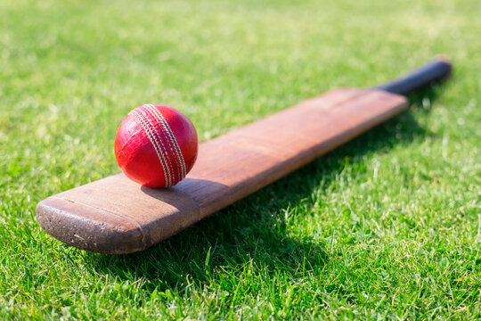
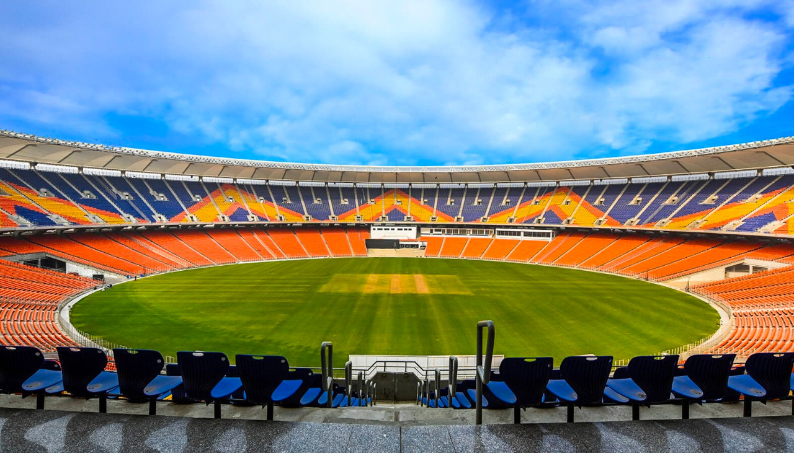
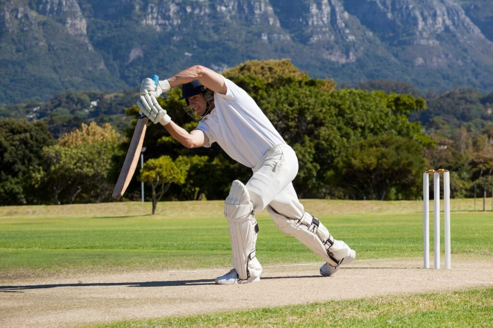
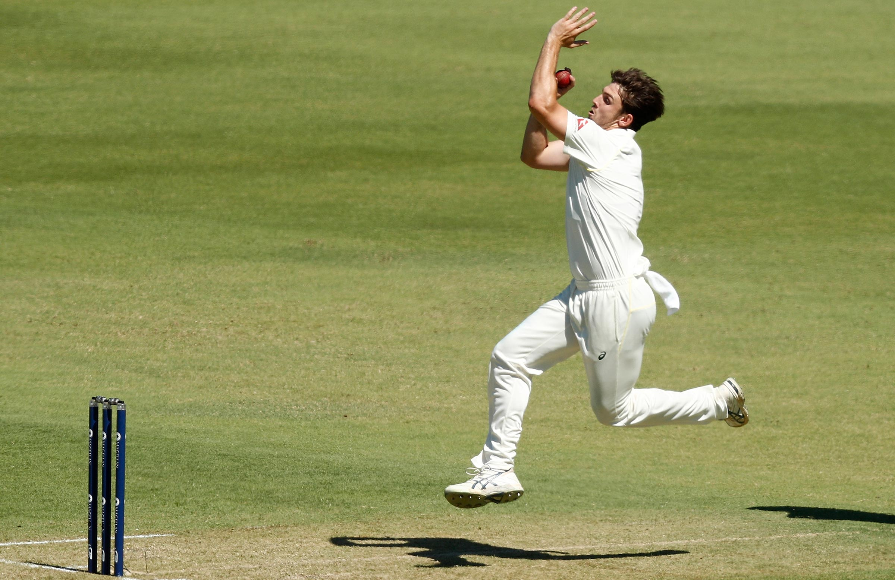

Welcome to the Cricket Central gallery. Here you can see different parts of the game, including cricket equipment, stadiums, batting and bowling.

Bats, balls and other equipment used in cricket.

Cricket is played in stadiums and grounds around the world.

Batters try to score runs for their team.

Bowlers try to stop batters from scoring and take wickets.
Equipment image: Adobe Stock, Extended License.
Stadium image: Austadiums, source: Austadiums website.
Batting image: wavebreak3, source: Cricket Matters.
Bowling image: Paul Kane, source: Cricket Australia.